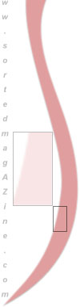

| top |
| home page |
|
|  | When the MUSIC ALBUM is played back on a DVD player the tracks you have added pictures and individual text to will be display while the track is playing. . MUSIC ALBUM MUSIC ALBUM Not all DVD players can play MP3 Audio. 8 Power allows you to make an Audio Album that will play on most DVD players. The sound quality is excellent, you can navigate easily through your albums and select individual tracks. |